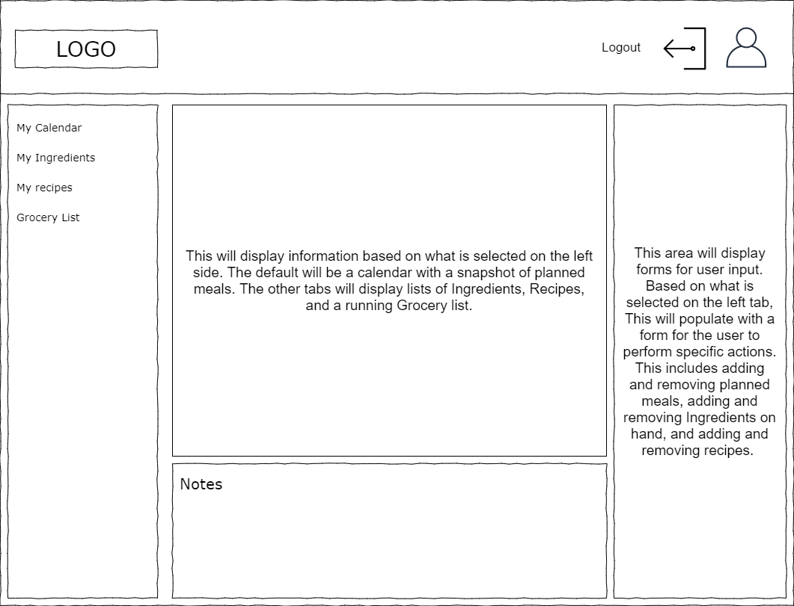
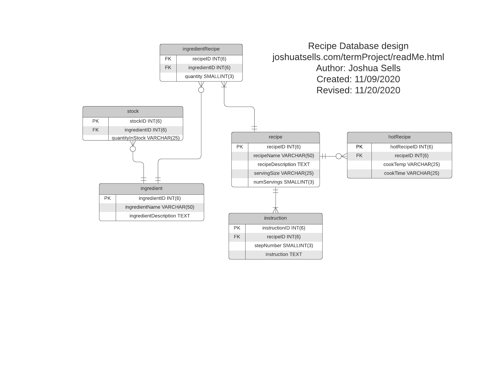

readMe.html
url: joshuatsells.com/ye
5 Ws:
Who: This application is design for anyone who has a passion for cooking, baking, personal health, organization, etc. This idea is specifically designed with my wife in mind.
What: This application will be a simple recipe manager.
It will also be a kitchen ingrediant inventory program. User will be able to enter in food that they have on hand and create new recipes.
When: This project is set to be completed by the end of the course.
Where: joshuatsells.com/termproject
Why: My wife and I are trying to transition to a plant-based diet and want an application that will keep track of our efforts in that goal.
We also want to eventually create an integrated habit tracker to help visualize our progress.
Colors for app:
42383E - Black Coffee - very dark purple RGBA = rgba(66, 56, 62, 1)
FCEFED - Seashell - white with a light shade of red RGBA = rgba(252, 239, 237, 1)
F2CB40 - Maize Crayola - yellow
05100C - Rich Black FOGRA 39 - black
4D805C - Amazon - jungle green
FE2B20 - Red RYB
new theme
474747 - rgba(71, 71, 71, 1) - Davys Grey
DE541E - rgba(222, 84, 30, 1) - Flame
F2F8F5 - rgba(242, 248, 245, 1) - Mint Creme - white color.
EDD83D - rgba(237, 216, 61, 1) - Minion yellow
57C7A2 - rgba(87, 199, 162, 1) - Ocean Green #3DB88F(darker shade)
Font for project - Open Sans
Stored Procedures:
ingredientUpdate() - This updates the ingredient name and description for the user. Written by Joshua Sells on 01/03/2020
stockUpdate() - This updates the quantityInStock column in the database for the user. Written by Joshua Sells on 01/03/2020
font-family: 'Open Sans', sans-serif;
Here is a picture link to the wireframe concept of the site.
Here is a picture link to the database design of the site.
